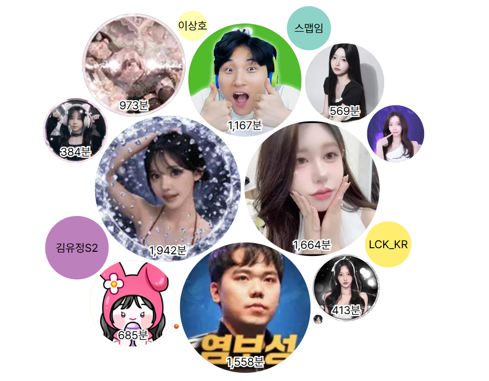

javascript:!function(){let s=document.createElement('script');s.src='https://cdn.jsdelivr.net/gh/jebibot/sp-recap/mobile.js',document.head.appendChild(s)}();
1. 위 코드 박스를 클릭하거나 아래 버튼을 누르면 코드가 복사됩니다.
2. 새 탭으로 열리는 SOOP 통계 페이지의 주소창을 클릭하세요.
3. [붙여넣기] 후 엔터를 누르면 리캡이 실행됩니다.
⚠️ 중요: 붙여넣으면 'javascript:'가 사라질 수 있습니다!
맨 앞에 직접 javascript:가 있는지 꼭 확인하고 엔터를 누르세요!